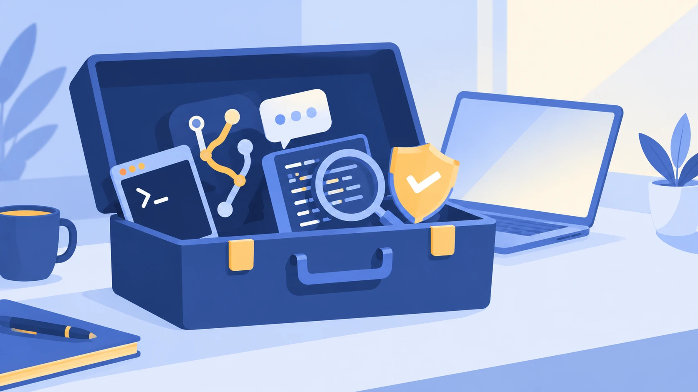
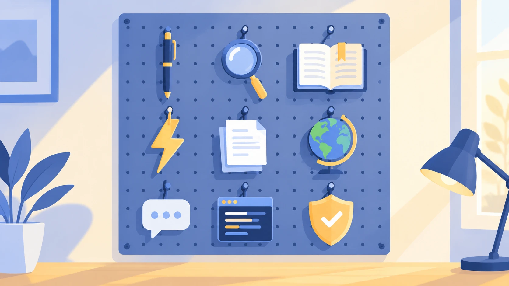
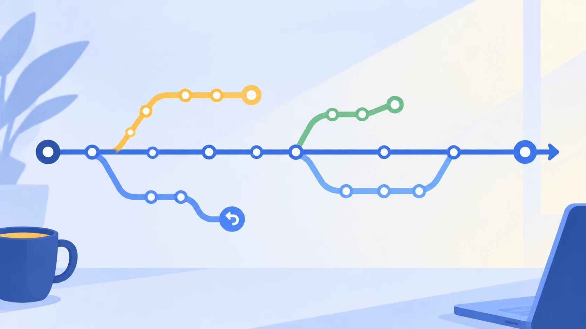

A proposal for an after-school club
AI Workshop: a club for students who build.
Students already learn to code. This club teaches them to work with the AI tools professional developers now use: choose the right tool, use it well, and check what it gives back.

Every student learns git by typing it themselves. This is an illustration, not a recording.
Made with: Page, layout and animation built with Claude Code. Concept, scope and decisions by Mark Tenzer.
The gap
Students are taught Python, which is fundamental and current. But they are not taught how the newest AI coding tools work, which one to reach for, or how to tell when the answer is wrong. They are using these tools anyway, mostly on their own, with no habits to guide them.
Built on what the school teaches
The school teaches the fundamentals, Python included. The club adds the newest AI tools, demonstrated and used on students' own projects, plus git by hand.
The toolbox has grown
Professional teams already work with AI coding assistants. Like any toolbox, the value is in knowing what each tool is for.
Judgment is the skill
Knowing when to push back on a tool is the skill. Students read, test, question and decide. The student stays in charge.
In 35 seconds
The whole idea as a short animation. It plays when you scroll to it, and you can pause or replay it.
Made with: Animation written by Claude in a chat on Mark's request, then adjusted with Claude Code. It is plain code in one file, with no video and nothing loaded from other sites.
Right tool for the job
One early session is built around a single idea: different tools are good at different things. Try it below. This is the kind of small interactive page a student could build in the club.

Starting points, not rules. Students test them on their own tasks and decide. Strengths change quickly, so the club re-checks them each time it runs. Ages shown are each provider's stated minimum and they change, so check before signing up.
Made with: The tool suggestions come from research Mark did with Gemini, cross-checked with Claude's web search. The interactive picker was written with Claude Code.
What students learn
Thirteen short modules, each 45 to 60 minutes. A module that runs over is picked up at the next session, so it fits a club, a workshop or a course.
- 1Modules 1 to 3
Know the toolbox
What AI students already use, the right tool for each job, and the right and wrong way to code with AI.
- 2Modules 4 and 5
Git, the developer's safety net
How version control works, then the commands by hand in Git Bash. Branches, history, undoing mistakes, keeping secrets out of a repo.
- 3Modules 6 to 8
An AI coding tool, then checking its work
Set one up in their own project. Use it to review changes, find bugs, write tests and spot security problems.
- 4Modules 9 to 11
How software really gets built
The development life cycle, traditional and AI-assisted, then a real project of their own from spec to working code.
- 5Modules 12 and 13
Judgment, then agents
Keys, privacy, integrity and licensing. Finally, building a small AI agent on top of code that already works.

The tools are the industry's tools
Students learn the tools professional developers work with every day, so what they practice carries straight into real work.
This page is one more example. It was planned, written, versioned and published with those same tools. The full change history is public, so anyone can see how it was made, step by step.
Guardrails
- Students use only tools they are old enough to use, with parent or guardian consent where a tool requires it. Some tools are 18 and over, so the trainer demonstrates those, and students who are 18 can use them.
- Everything the AI writes is read, tested and understood before it is used. If a student can't explain the code, it isn't finished.
- Students type git commands themselves before any tool is allowed to run them.
- No passwords, keys or personal data go into an AI tool or a code repository. Repositories start private.
- The school decides which tools are allowed and how the club fits its integrity and safeguarding rules.
The proposal
| Who | Students aged 13 and over who code or want to, and hobby builders. Parent or guardian consent for anyone under 18. Roughly 5 to 10 per club. |
|---|---|
| Format | About an hour a session. Frequency and length set by the school. |
| Work | Students bring their own projects. A starter project is available for anyone without one. |
| Led by | Mark Tenzer, who runs similar AI workshops for university students. |
| Next step | A conversation about timing, equipment and which tools the school allows. |
How this page was made
The point of the club is to show students what they can produce. So here is what produced this page, element by element.
| Concept, scope, decisions | Mark Tenzer |
|---|---|
| Writing and structure | Drafted with Claude, edited and approved by a human. That is the human in the loop: AI drafts, a person decides |
| Research on tools and age rules | Researched by Mark with Gemini. Age rules for several tools cross-checked with Claude's web search. Each provider's own terms are the source of truth |
| Layout, animation, tool picker | Built with Claude Code as one self-contained file |
| Version history and publishing | Git and GitHub, published with GitHub Pages |
| Images, voice, video | Three illustrations: ChatGPT image generation, prompts written with Claude. Animated explainer: written by Claude in a chat, adjusted with Claude Code. A short NotebookLM video clip is coming, credited the same way |
No account is needed to view this page. It has no tracking and loads nothing from other sites.